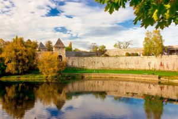
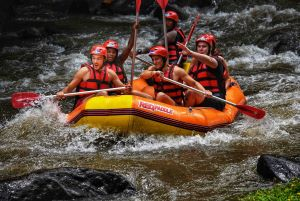
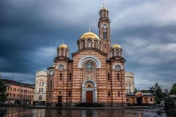

Things to do in Banja Luka

Visit The Kastel Fortress
Kastel is a medieval fortress and one of Banja Luka's main attractions

Go Rafting on the Vrbas
If you are up for some adrenaline rush, you can't miss rafting on Vrbas

Visit The Church of the Holy Trinity
The church of the Holy trinity is the biggest Orthudox church in Banja Luka
Best places to eat in Banja Luka
Restaurant Kazamat
Kazamat is one of the oldest restaurants in Banja Luka. It is situated within the walls of Kastel Fortress.
Mala Stanica
Restaurant "Mala Stanica" uses the best quality ingredients from domestic manufacturers.
Restaurant Lukijan
Excellent restaurant near the Vrbas river. Specialises in Italian and Asian food.